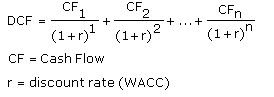

A valuation method used to estimate the attractiveness of an investment opportunity. Discounted cash flow (DCF) analysis uses future free cash flow projections and discounts them (most often using the weighted average cost of capital) to arrive at a present value, which is used to evaluate the potential for investment. If the value arrived at through DCF analysis is higher than the current cost of the investment, the opportunity may be a good one.
Calculated as:
Also known as the Discounted Cash Flows Model. There are many variations when it comes to what you can use for your cash flows and discount rate in a DCF analysis. Despite the complexity of the calculations involved, the purpose of DCF analysis is just to estimate the money you'd receive from an investment and to adjust for the time value of money.
Discounted cash flow models are powerful, but they do have shortcomings. DCF is merely a mechanical valuation tool, which makes it subject to the axiom "garbage in, garbage out". Small changes in inputs can result in large changes in the value of a company. Instead of trying to project the cash flows to infinity, terminal value techniques are often used. A simple annuity is used to estimate the terminal value past 10 years, for example. This is done because it is harder to come to a realistic estimate of the cash flows as time goes on.
{kind=link}